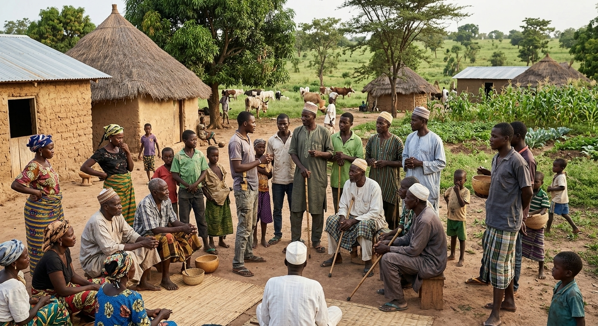

Governance
Leadership
Wouro Yobi is not led by one structure alone. Traditional authority, community administration, regional advocacy and development coordination each play a distinct part.

Contextual reference · Community lifeWhy This Distinction Matters
Leadership takes more than one form
t is tempting to describe a community's leadership as a single hierarchy — one person or one office at the top. Wouro Yobi's reality is more layered than that, and collapsing it into one structure would misrepresent how decisions actually get made and who actually carries authority.
Traditional leadership guides custom, mediation and cultural continuity. Community administration handles the practical, day-to-day coordination of committees and shared resources. Regional advocacy connects Wouro Yobi to a wider Mbororo network beyond the community itself. Development coordination is where specific initiatives — like the Kindergarten Expansion — get organised and tracked. This page keeps those four roles distinct rather than folding them into one another.
Traditional Authority
Custom, dialogue and continuity
Traditional leadership in Wouro Yobi guides custom, mediates disputes before they escalate, and represents the community in dealings with visiting officials and partners. This role sits alongside — rather than above — the community's other administrative and advocacy structures.
A fuller leadership profile is documented in Our Identity, and his stated vision for the community's future is recorded separately in Our Future.
Regional Advocacy
Connecting Wouro Yobi to a wider network
Ardo Abdoulkadi is President of the Mbororo Social and Cultural Development Association (MBOSCUDA) for the Mayo-Banyo division — a role distinct from Wouro Yobi's own traditional leadership. His work represents Mbororo interests across land rights, education access and pastoral development at a regional level, connecting this community to advocacy and networks beyond its own boundaries.
Day-to-Day Coordination
Community administration
Committees coordinate the practical, shared work of community life. Names and current members are still being documented; the structure is presented here as it is understood so far.
Education
Documenting
Agriculture
Documenting
Youth
Documenting
Women
Documenting
Community Development
Documenting
Organising Specific Initiatives
Development coordination
Where traditional leadership and administration set direction, development coordination is where specific initiatives — such as the Kindergarten Expansion — are organised, tracked and connected to partners. No named coordination roles are documented yet; this structure will be filled in as verified information becomes available.
Status
Community records are being assembled. The Living Archive will continue to document this structure through community testimony as it becomes available.
Archive Methodology
How this page is verified
Named leadership on this page is limited to what has been directly documented. Future evidence will include:
Our home exists to document the life, heritage and aspirations of Wouro Yobi from the perspective of its people. We preserve our history, celebrate our culture, record our progress and share our vision for the future — so that future generations, researchers, partners and the wider world can understand who we are and what we are building together.Editorial Mission — Wouro Yobi Living Archive